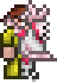
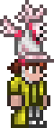

Creating Tall Helmets with tModLoader
Making helmets with tModLoader is gernerally a straightforward process— Draw the sprite for your helmet, copy and paste it onto the spritesheet about twenty times, drag it into Visual Studio, and let the game do its magic of drawing the helmet onto your player. This works just fine 99% of the time, but theres only so much space on each frame of the spritesheet. So what do you do when your sprite doesn't fit? That is exactly what I spent about 3 days trying to figure out; This guide shows how I did it.
In short, we are going to use a PlayerDrawLayer to draw the helmet sprite onto the player whenever the helmet is equipped. Then we have to adjust the position of the helmet to give off the illusion of it being worn on the player's head.
We are going to need 3 classes: a ModItem class, which actually adds your helmet item into the game; a ModPlayer class, which essentially keeps track of whether or not the player is wearing your helmet, so that the final class—a PlayerDrawLayer class—can draw your helmet onto the player.
For this guide, I am going to be using the Symphony Hat from my mod as the example. Keep in mind that throughout this guide the namespaces and class names that I use will be specific to my mod. Your mod is obviously going to have different names and most likely a different structure.
ModItem and ModPlayer Classes
First, we will set up the ModItem class just as you would for any helmet. In my case, I created a file named SymphonyHat.cs inside the Armor folder of my project. Using folders is completely optional, but it helps to keep the project organized.
To start off, the class should look something like this:
using Terraria;
using Terraria.ID;
using Terraria.ModLoader;
namespace JoJosMod.Armor
{
[AutoloadEquip(EquipType.Head)]
internal class SymphonyHat : ModItem
{
public override void SetDefaults()
{
// These values can be whatever you want for your item
Item.width = 30; Item.height = 46;
Item.vanity = true; // Include this if your helmet is only a vanity item
Item.rare = ItemRarityID.Pink;
Item.value = 500;
}
}
}
Nothing too crazy going on in that class yet, but we will add more to it once the ModPlayer class is set up. Make sure that the [AutoloadEquip(EquipType.Head)] line is included before the class declaration. This basically tells the game to handle our item as a helmet.
Now we need to create the ModPlayer class. This class will contain a boolean which tracks whether or not the player is wearing the helmet. ModPlayer has a method called ResetEffects() which we will use to reset the boolean to its default value—most likely false—so that the boolean is false when the helmet is not equipped. The way this works is that ResetEffects() is called once every game tick at the beginning of the player's update code. Later on in that code, the boolean will be set to true if the player is wearing your helmet (we will introduce this logic back in our ModItem class once the ModPlayer is set up).
With that explaination out of the way, here is what the ModPlayer class should look like:
using Terraria.ModLoader;
namespace JoJosMod.Players
{
internal class SymphonyHatPlayer : ModPlayer
{
public bool isWearingShmphonyHat;
public override void ResetEffects()
{
isWearingShmphonyHat = false;
}
}
}
As you can see, the isWearingSymphonyhat boolean is what will track whether or not the Symphony Hat is being worn, and is set to false inside of ResetEffects().
Keep in mind that if your mod uses a lot of these effects, then you do not have to create a seperate file just for this effect. You could have one ModPlayer class for all of the player effects that your mod uses, as long as there is a boolean to track specifically when the player is wearing your helmet. This is the only effect that my mod uses, which is why I named it so specifically.
Back in our ModItem class, we need to add the logic which sets the boolean that we just created to true when the helemt is equipped. We will do this by overriding the IsVanitySet() hook to always return true when our helmet is equipped, allowing us to use the UpdateVanitySet() hook to change the boolean in our ModPlayer to true. The UpdateVanitySet() hook allows us to essentially "make things happen" when the player is wearing a full vanity set, which is why we need to override IsVanitySet() to make just this helmet alone count as a vanity set. I initially tried using the UpdateVanity() hook to acomplish this, but it did not seem to be called when the helmet was equipped and I have no idea why.
Add the following inside your ModItem class:
public override bool IsVanitySet(int head, int body, int legs)
{
return true;
}
public override void UpdateVanitySet(Player player)
{
player.GetModPlayer<SymphonyHatPlayer>().isWearingShmphonyHat = true;
// SymphonyHatPlayer should be replaced by the name of the ModPlayer class you created
// isWearingSymphonyHat should be replaced by the boolean you created inside that class
}
Remember that you may need to import the namespace that your ModPlayer class is inside of, at the top of the file with your ModItem. In my case, I added using JoJosMod.Players to my SymphonyHat.cs file.
Optionally, you can choose how the player's hair is displayed while the helmet is equipped. By default, the player's hair will not drawn at all. I chose to display the player's hat hair, which can be acomplished by the following code:
public override void SetStaticDefaults()
{
ArmorIDs.Head.Sets.DrawHatHair[Item.headSlot] = true;
}
Now that we have the logic in place to track whether or not our helmet is being worn, we can move on to actually drawing the helmet onto the player when it is worn. Make sure that you also have the texture for your helmet as well as a helmet spritesheet in the same directory as your helmet item. Our helmet spritesheet is going to be blank for this guide. Remember that the file name for these textures should match the class name of your helmet item, with the spritesheet including _Head the the end of its file name. In my project, these files are called SymphonyHat.png and SymphonyHat_Head.png.
PlayerDrawLayer Class and Drawing The Helmet
We are going to create a new file which will contain our PlayerDrawLayer class; I will be naming this file SymphonyHatLayer.cs. First, let's get some of the basic setup out of the way before moving on to drawing and positioning the helmet.
The PlayerDrawLayer class has a hook called GetDefaultVisibility(). When it returns true, the layer will be made visible; likewise it will be invisible if false is returned. We are going to override this hook to return the value of our boolean which tracks whether or not the helmet is being worn.
We also need to override the GetDefaultPosition() hook to tell the game which layer of the player we want this layer to be drawn on. In our case, drawing it after the head layer should suffice.
In addition to these two things, I will also be adding the code which makes the helmet appear on the player's minimap icon, as well as declaring a variable to contain the helmet's texture for use later.
// These are all of the imports that I ended up needing
using Terraria;
using Microsoft.Xna.Framework;
using Microsoft.Xna.Framework.Graphics;
using Terraria.DataStructures;
using Terraria.ModLoader;
using ReLogic.Content;
using System.Linq;
using JoJosMod.Players; // You may need to import the directory that contains your ModPlayer
namespace JoJosMod.Armor
{
internal class SymphonyHatLayer : PlayerDrawLayer
{
public Asset<Texture2D> hatTexture; // Variable for our texture, will use later
public override bool IsHeadLayer => true; // Draws the helmet on the minimap. Optional, but you'll probably want to use this
public override bool GetDefaultVisibility(PlayerDrawSet drawInfo)
{
// Return your boolean which tracks whether or not the helmet is being worn
return drawInfo.drawPlayer.GetModPlayer<SymphonyHatPlayer>().isWearingShmphonyHat;
}
// Draws this layer after, or in front of, the head layer
public override Position GetDefaultPosition() => new AfterParent(PlayerDrawLayers.Head);
protected override void Draw(ref PlayerDrawSet drawInfo)
{
// Will contain all the logic for drawing the layer
// Keep this empty for now, we will add onto it later
}
}
}
The rest of our code is going to be written inside of the Draw() hook of our PlayerDrawLayer. We will start by adding what is basically the bare minimum needed to actually have the helmet be drawn onto the screen, then we will handle positioning it onto the player's head.
The drawInfo parameter contains a lot of useful information that we will be using throughout this portion of the guide. We will be using drawInfo.drawPlayer very often to access the player which this layer is being draw to, so we will start by declaring a Player variable to make this a bit more convenient to access.
We also need to assign the texture of our helemt to the hatTexture variable we created above (yours may be named differently), and define the position that the helmet will be drawn. Then, a new DrawData object will be created with these values—as well as a few others—and added to drawInfo.DrawDataCache, which should then draw our helmet.
protected override void Draw(ref PlayerDrawSet drawInfo)
{
Player player = drawInfo.drawPlayer;
if (player.DeadOrGhost) return; // If the player is dead or a ghost, don't draw the helmet
hatTexture ??= ModContent.Request<Texture2D>("JoJosMod/Armor/SymphonyHat"); // Specify the path to your helmet texture, without file extensions.
var position = drawInfo.Position - Main.screenPosition; // This should position the sprite just about in the middle of the player.
position = new Vector2((int)position.X, (int)position.Y); // Cast the x and y values to an integer to keep the sprite in line with the player. Without this, the sprite will appear to shake.
DrawData drawData = new
(
hatTexture.Value,
position,
null,
drawInfo.colorArmorHead, // Color of the helmet will interact with light as expected, and be fully visable on the minimap.
0,
drawInfo.rotationOrigin, // I feel like it makes sense to use this value, idk i dont need to rotate my sprite
1f,
// Player direction is either -1 or 1, -1 being left, and 1 being right. If your sprite is drawn facing right, this code will flip it to face the same direction as the player.
player.direction < 0 ? SpriteEffects.FlipHorizontally : SpriteEffects.None
);
drawInfo.DrawDataCache.Add(drawData);
}
If everything is implemented correctly, your helmet shoud be drawn similar to this when equipped:
At this point if your helmet is not being drawn, its time to start debugging. One issue I ran into was incorrectly implementing the boolean which tracks when the hat is worn. To see it this is also the case for you, go back to the GetDefaultVisibility() method of your PlayerDrawLayer and have it always return true. Then, the layer should always be drawn to the player regardless of whether or not the helmet is being worn. If this is the case, double check the logic in your ModPlayer and ModItem classes which handle this boolean, as that is were the issue would lie.
Let's move on to positioning the helmet on the player's head. The way we will acomplish this is by making changes to the position variable. There is however one major problem we will have to solve, being that in the player's walking animation, the player shifts up and down by about 2 pixels. Before handling that problem, we will first position the helmet so that its sits where we want it to on the player's head while standing still, facing either left or right.
We are going to declare two variables called drawOffsetX; to define how many pixels left or right the sprite should be shifted, and drawOffsetY; to define how many pixels up or down the sprite should be shifted. The sprite will be shifted from where ever it is positioned with our current logic implemented. These variables will be used to create a Vector2, the value of which will be added to our position variable before substracting Main.screenPosition.
Here is what your Draw() method may look like with these implementations:
protected override void Draw(ref PlayerDrawSet drawInfo)
{
Player player = drawInfo.drawPlayer;
if (player.DeadOrGhost) return;
hatTexture ??= ModContent.Request<Texture2D>("JoJosMod/Armor/SymphonyHat");
// You may need two different values depending on which direction the player is facing.
// In my case, a shift of -4 is needed when facing left, and -6 when right.
int drawOffsetX = player.direction < 0 ? -4:-6;
// Remember that negative y values will shift the sprite upwards.
int drawOffsetY = -26;
Add a new Vector2 using your x and y offsets
var position = drawInfo.Position + new Vector2(drawOffsetX,drawOffsetY) - Main.screenPosition;
position = new Vector2((int)position.X, (int)position.Y);
DrawData drawData = new
(
hatTexture.Value,
position,
null,
drawInfo.colorArmorHead,
0,
drawInfo.rotationOrigin,
1f,
player.direction < 0 ? SpriteEffects.FlipHorizontally : SpriteEffects.None
);
drawInfo.DrawDataCache.Add(drawData);
}
Adjust your x and y offset values until your sprite is positioned however you want it. Mine now looks like this:
Make sure your sprite is aligned correctly while facing both directions, the code above shows how to change the offset depending on which direction the player is facing.
Now we have to adjust the position of the layer to stay in sync with the player's walking animation. We will do this by checking which frame of the player's body animation is being played, and if this frame corresponds to when the player is shifted upwards in its animation, we will decrease the drawOffsetY by 2.
We will be using the player's body frame as opposed to the leg frame because the body frame takes into account when the player is attacking. You may have noticed that when the player is walking and attacking, it does not shift up and down.
The player's body animation is made up of 20 frames. Numbered 0-19, frames 7, 8, 9, and 14, 15, 16, are the frames where the player is shifted up in its walking animation. Those frames are in red on the spritesheet below. I figured this out by looking at the animation frames of a gif of the player walking in aesprite, and matching which ones were played when the player was shifted upwards.
We can access Player.bodyFrame.Y to see the Y coordinate of the top-left corner of the frame which is currently being played in the player's body animation. We can also use Player.bodyFrame.Height to see how many pixles tall each frame of the animation is. Every frame is the same height—56 pixels—unless some mod being used changes that.
To determine which frame is being played, we can divide Player.bodyFrame.Y by Player.bodyFrame.Height. Then we can check if this value is equal either 7, 8, 9, 14, 15, or 16; the frames in which the player is shifted upwards. If any of those frames are being played, then subtract 2 from drawOffsetY to shift the helmet up 2 pixels and keep it in line with the player. That is the approach that I used, and is what I will be demonstrating in this guide.
Below is the Draw() hook with this logic implemented.
protected override void Draw(ref PlayerDrawSet drawInfo)
{
Player player = drawInfo.drawPlayer;
if (player.DeadOrGhost) return;
hatTexture ??= ModContent.Request<Texture2D>("JoJosMod/Armor/SymphonyHat");
int[] highFrames = new int[] {7,8,9,14,15,16}; // Contains all the frames where the player is shifted up
int bodyFrameHeight = player.bodyFrame.Height;
int playerBodyFrameY = player.bodyFrame.Y;
int playerBodyFrame = playerBodyFrameY / bodyFrameHeight;
bool isHighFrame = highFrames.Contains(playerBodyFrame);
int drawOffsetY = -26;
if (isHighFrame) drawOffsetY -= 2;
int drawOffsetX = player.direction < 0 ? -4:-6;
var position = drawInfo.Position + new Vector2(drawOffsetX,drawOffsetY) - Main.screenPosition;
position = new Vector2((int)position.X, (int)position.Y);
DrawData drawData = new
(
hatTexture.Value,
position,
null,
drawInfo.colorArmorHead,
0,
drawInfo.rotationOrigin,
1f,
player.direction < 0 ? SpriteEffects.FlipHorizontally : SpriteEffects.None
);
drawInfo.DrawDataCache.Add(drawData);
}
There are plenty of ways to go about writing this portion of the code. However, I wanted this to be very readable and easy to follow.
Now as the player walks, the helmet should shift with their movements. One last detail we can add is the ability to apply dyes to the helmet. Before drawInfo.DrawDataCache.Add(drawData);, add the following:
int dyeShader = player.dye?[0].dye ?? 0;
drawData.shader = dyeShader;
This sets drawData.shader to the shader of the dye equipped, or 0 if no dye is equipped.
That's pretty much it. If you want to see the complete code for this inside my project, it's on my Github.